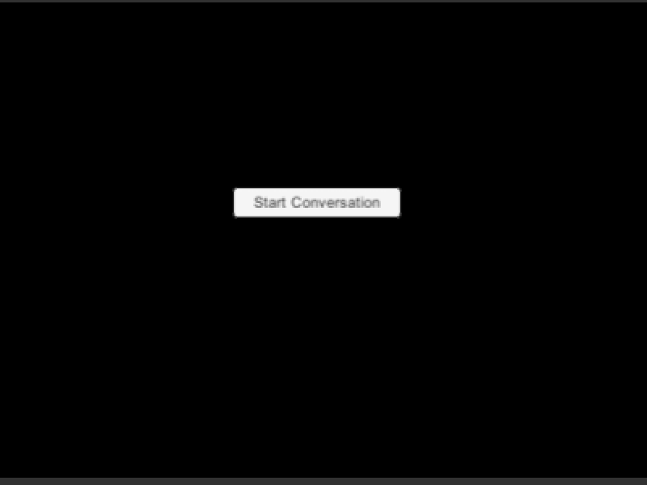
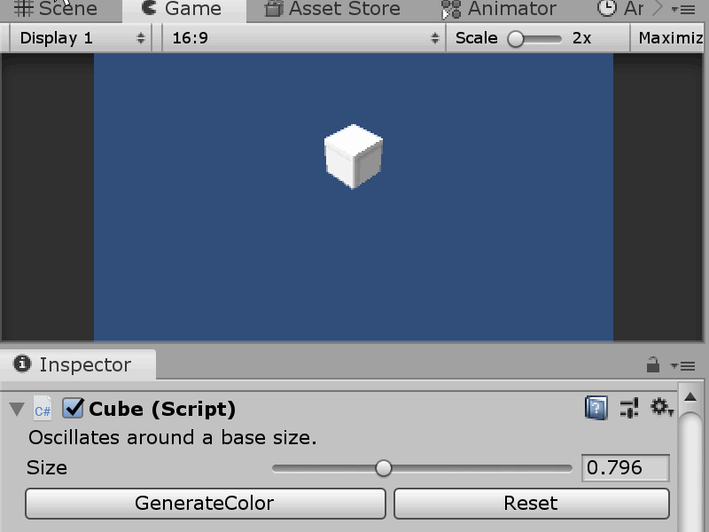
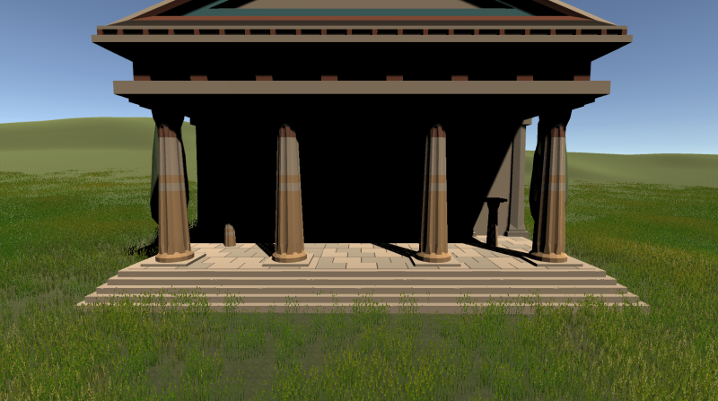
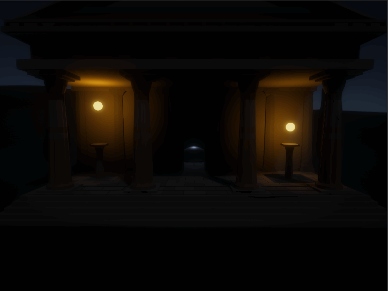
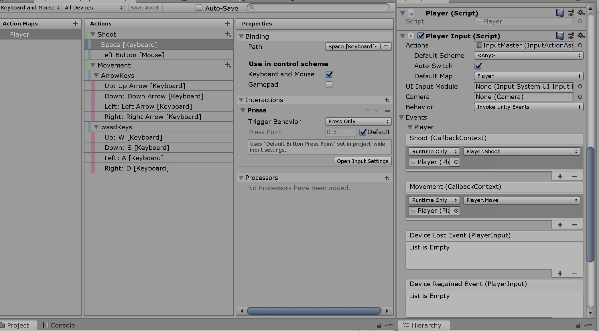
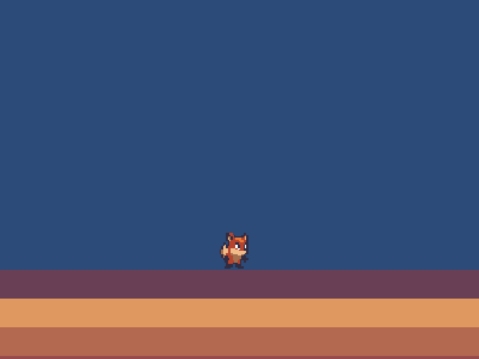
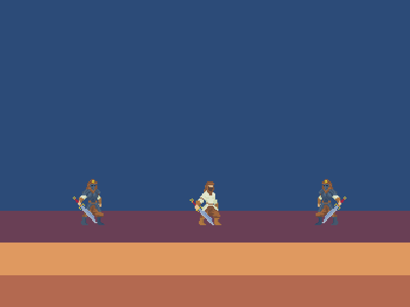
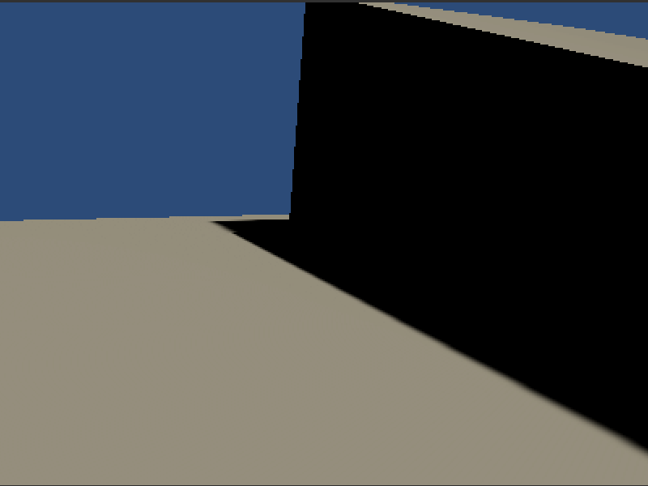

Intro
Description of Project, Dec 21, 2019
This is the first of 15 posts on my exploration of a breadth of Unity topics. I will go through a series of Brackey's "Advanced" tutorials (none of it is complex) and implement the projects outlined in the video. I then want to write up my reflection here detailing what I learned inluding a visual and then how related skills can be applied more generally in a professional setting. My hope is by the end of 2 weeks I have a showcase of my skills beyond programing and more specifically as a Unity developer.
Day 1
Planetary Simulation in Unity, Dec 22, 2019

This project was all about leveraging Unity's physics simulation capabilities. The heart of the code was in a physics step which takes each other gravatational object and attracts them too itself. The object list is static and added individually on enabling too removed runtime lookup. The obvious usecase is a gravity platformer in the vain of Mario Galexy but it's also pretty foundational for space sandbox sims and Kerbal Space program.
Day 2
Dialogue Manager in Unity, Dec 23, 2019

This time the focus was on Untiy's canvas system for implementing a dialoglue system (for like indie RPGs and VNs). It also incoperates animations for tranitioning the text box onscreen. It works by having dialgue objects with sentences which are then loaded into a queue in the manger. The senetence is then broken up by character and loaded individually in a coroutine for that nice slow spelling out of words. Brackey's implemtation of dialgue objects didn't include images for the character so I just added it.
Day 3
Custom Inspector in Unity, Dec 24, 2019

Today's project was all about Editor scripts which are pretty much the heart of working on games in a professional setting. Being able to write tools outside of runtime to build content can be incredibly powerful. Here the implementation was very minimal with a simple slider to scale the object and a set of color generation buttons. However, I have a lot of experience of doing this for gameplay and animation operations. The tools were incredible tools for engineers, designers, and artists and especially so when you start using things like animation curves or orderable lists.
Day 4
The High Definition Render Pipeline, Dec 25, 2019


I'm went outside the playlist with this HDRP project. I used a corinthian temple prefab I found in the asset store as the subject and added some basic elements to better match Brackey's example. I've worked with this kinda stuff before but immediately I could tell Unity added a lot of polish to the process. All the fancy post processing effects are self contained within the volume component and there's even a debugger specifically for rendering. The coolest thing you can do with that is set the albedo to light grey and see explicately how the scene is being lit. Above the left image is before and the right gif is after HDRP and adding lights and stuff (I couldn't get rid of the gif artifacts).
Day 5
New Unity Input System, Dec 26, 2019

This time we don't have eye candy since the input system in Unity system is more an interation than a new implmentation (it's that too) I guess the most significant part of this new feature set is the ability to quickly outline the set of input actions (such as player movement or UI interfaces) and bind them to specific c# methods in the scene. You also are passed the context which contains the state logic like "started" or "canceled" and values like a vector2 for movement on gamepad sticks.
Day 6
Unity Animation, Dec 27, 2019

I'm trying to build up to a melee combat system video so this is a precurser along with the new input system to get to that video. All this was old hat honestly but I did learn about the AnyState in the aminator for exiting into Jumping from all other states.
Day 7
Melee Combat, Dec 28, 2019

Alright here's the combat system and all in all the solution was pretty elegant with Unity's fancy toolkit for input and animations. I deviated from the script a bit by setting up a loop to allow attacks to continuously occur while space is held.
Day 8
FPS Character Controller, Dec 29, 2019

So this time it's every Unity developers 101 from like 5 years ago (back when unity was 3D focused) with a FPS character controller. I know it's kinda rudemetary but I wanted to rethink the implementation in 2019 and use the fancy new input system stuff. Also this implementation opted to not have a rigidbody on the player which I kinda liked. Instead physics movements are simulated in the controller which forces explicite definition of how the player can and should move.